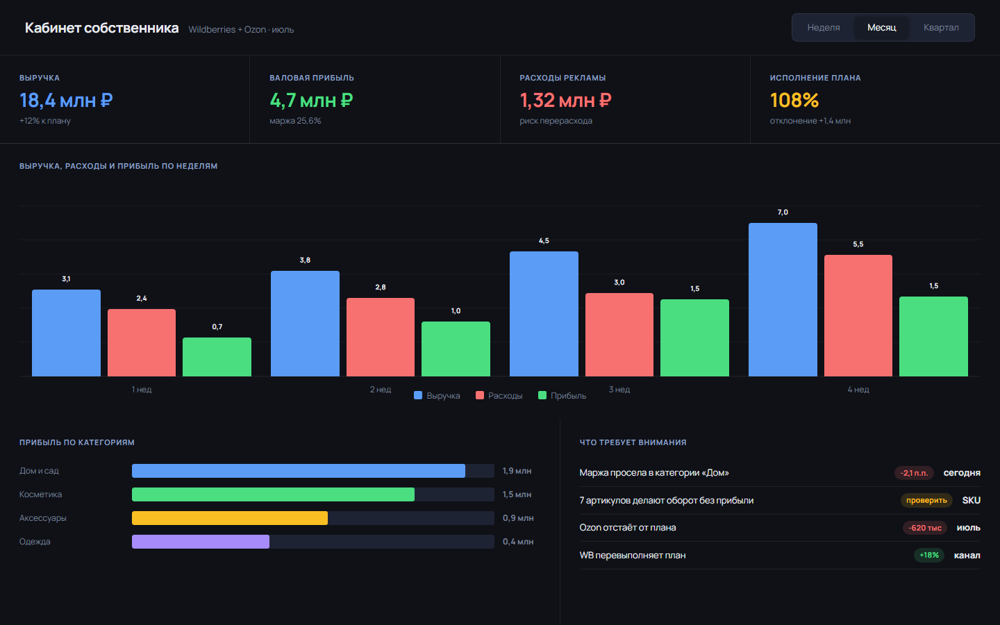
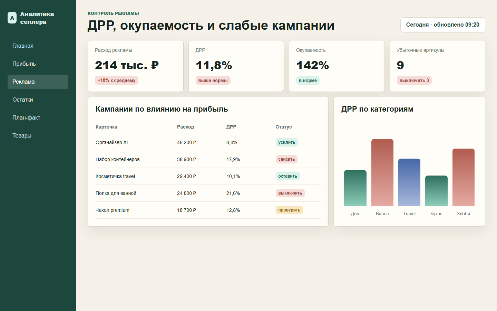
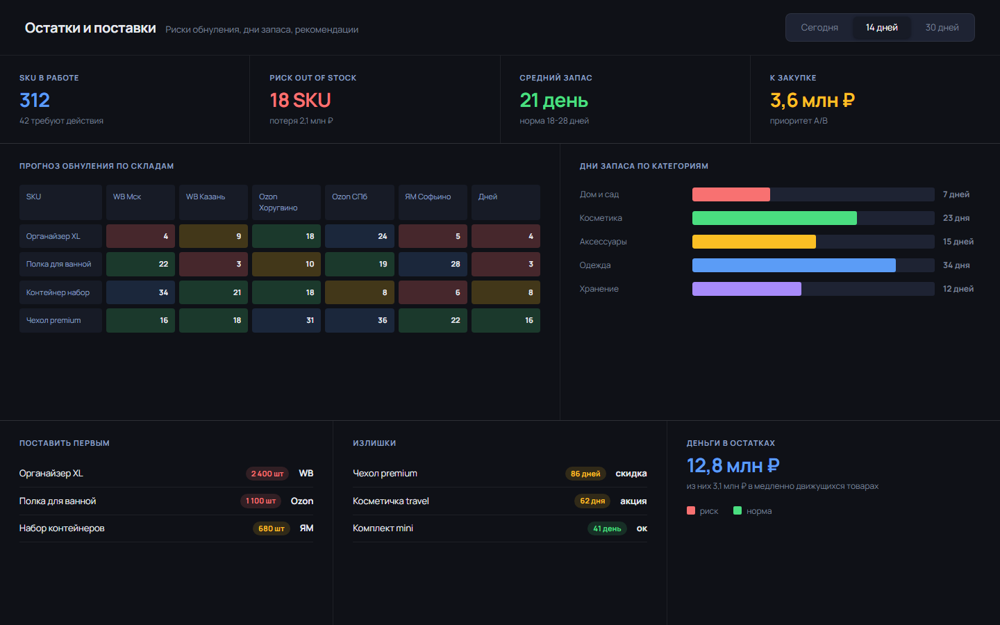

Продажи есть, прибыли не видно
Оборот растёт, но непонятно, какие товары реально приносят деньги после комиссий, логистики, возвратов и рекламы.
Для селлеров Wildberries, Ozon и Яндекс Маркета
Считаем прибыль по артикулам, рекламу, остатки, план-факт и расходы по вашей логике. Не типовой сервис, а рабочий кабинет под ваш бизнес.

Когда обычных отчётов уже мало
В одном отчёте продажи, в другом реклама, в третьем остатки, в четвёртом себестоимость. Команда тратит часы на сверку, а собственник всё равно не видит главное: где бизнес зарабатывает, а где просто делает оборот.
Боли селлеров
Оборот растёт, но непонятно, какие товары реально приносят деньги после комиссий, логистики, возвратов и рекламы.
ДРР считают «в среднем», а убыточные кампании и карточки всплывают только в конце месяца.
Товар обнуляется, карточка теряет позиции, а допоставка планируется по ощущениям.
Менеджеры вручную сводят отчёты, исправляют формулы и спорят, чья цифра правильная.
План продаж есть, но каждый день не видно, где отставание: в заказах, марже, рекламе или остатках.
У каждого бизнеса своя себестоимость, поставки, юрлица, расходы и правила управленческого учёта.
Что делаем
Ваши цифры собираются в одном месте и считаются по согласованной логике. Собственник видит прибыль и риски, руководитель видит план-факт, менеджеры видят свои товары и задачи.
Показываем, какие товары зарабатывают, какие держатся на обороте, а какие тянут бизнес вниз.
Связываем рекламу с маржей, чтобы вовремя выключать лишнее и усиливать рабочие связки.
Показываем риск обнуления, дни запаса и приоритеты поставок.
Каждый день видно, как месяц идёт по выручке, расходам, прибыли и маржинальности.
Может подсказывать, как настраивать биддер и репрайсер: где поднять ставку, снизить цену или остановить расход.
Как выглядит кабинет


Почему не типовой сервис
Как запускаем
Фиксируем, какие показатели важны собственнику, руководителю и менеджерам.
Определяем, как считать прибыль, рекламу, возвраты, остатки, планы и расходы.
Делаем экраны под роли команды, чтобы каждый видел только нужное.
Обучаем команду, настраиваем регулярные отчёты и дорабатываем по факту использования.
Результат
Первый шаг
На короткой встрече разберём текущие отчёты, найдём слабые места и предложим структуру первого кабинета.
Почта для связи: manqueee@atomicmail.io